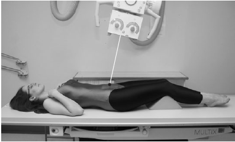

Sacroiliac Joint(AP)
Centering point:Centre in the midline at a level midway between the anterior
superior iliac spines and the superior border of the symphysis
pubis.
The central ray is directed between 5 and 15 degrees cranially,
depending on the sex of the patient. The female
requires greater caudal angulation of the beam.

Cassette Size:24cm x 30cm (12 x 10 ins)
Potrait
Exposure Factors:75kVp on
20MaS
FFD:100cm
Bucky/Grid:Moving or Stationary Grid
Filter:No
Collimation:The primary beam is collimated to the area of interest.
Pathologies:Lower back pain
Position of patient and cassette
- The patient lies supine and symmetrical on the X-ray table,
with the median sagittal plane perpendicular.
- The midline of the patient must coincide with the centred
primary beam and the table Bucky mechanism.
- To avoid rotation, the anterior superior iliac spines must be
equidistant from the tabletop.
-
A 24 x 30cm cassette, placed transversely in the Bucky tray,
is centred at a level to coincide with the central ray.
- The shoulders are raised over a pillow to eliminate the
lumbar arch.
- The knees should be flexed over foam pads for comfort.